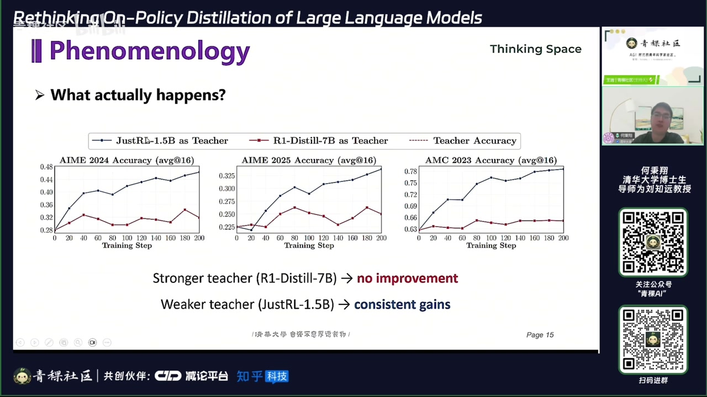
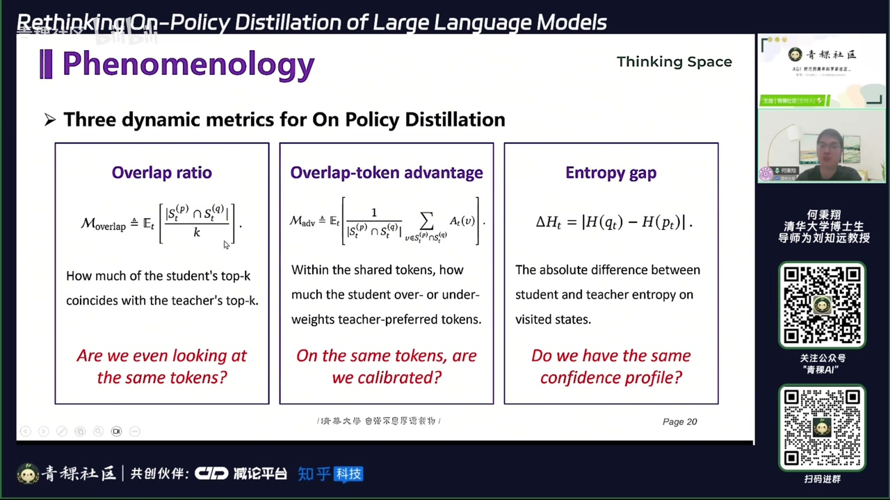
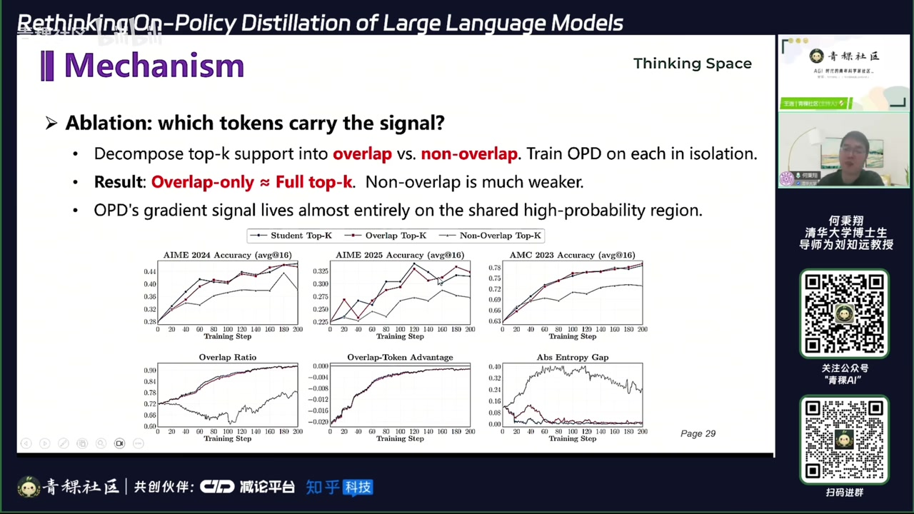
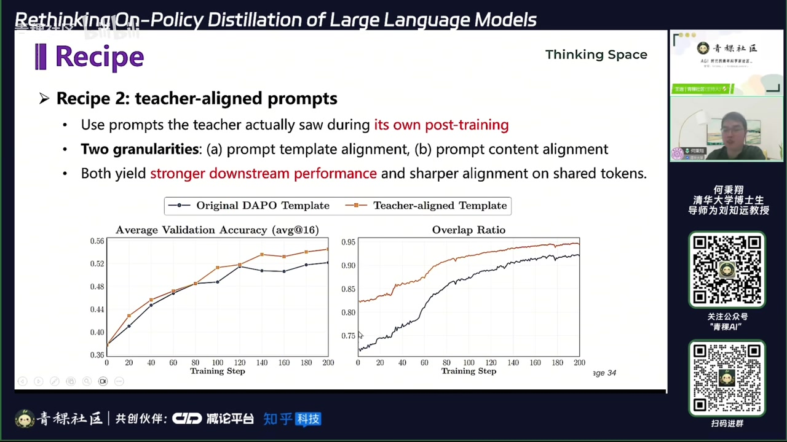
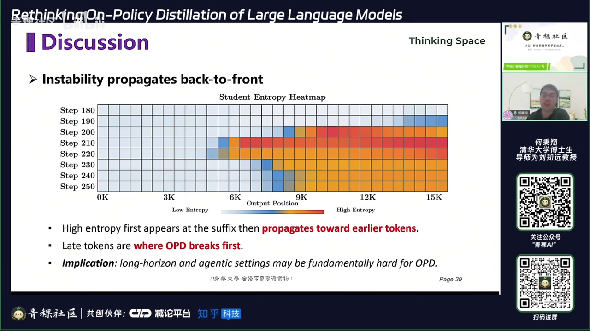
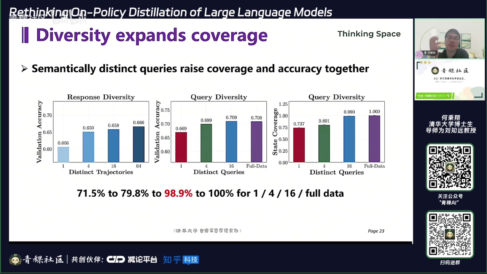
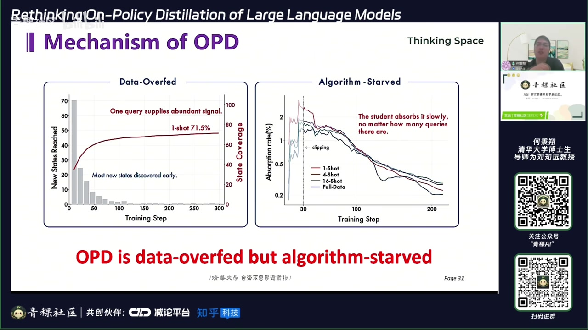
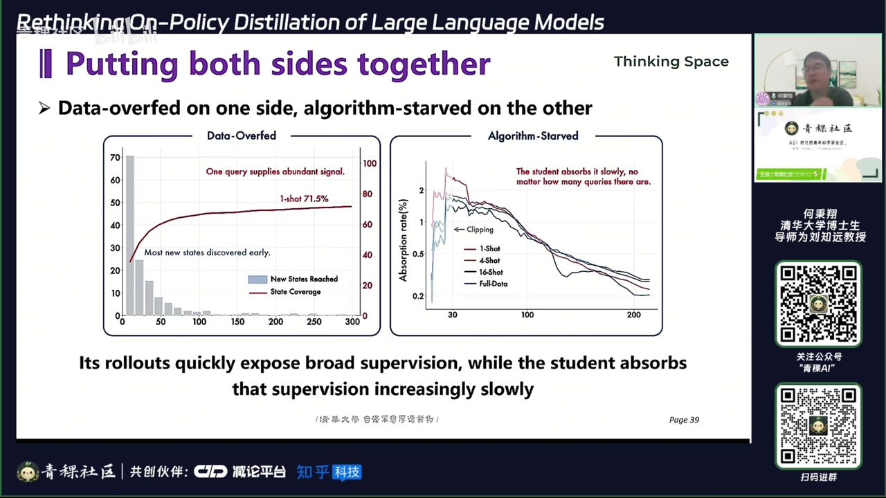

01｜OPD应用现状与成功必要条件
00:00:01何炳霞 · 主讲人大家好，我是何炳霞，目前是THL 2024级的博士生，导师是刘志远老师。今天非常荣幸能在青稞平台分享我们从去年到今年的两篇ReOPD系列工作，探讨OPD如何做得更work，以及work之后会呈现出哪些性质。首先，为还不太熟悉OPD的同学简要介绍背景：OPD目前在整个大模型后训练阶段已广泛应用。以往的后训练流程通常是先SFT再RL；而现在，OPD正穿插其中，成为后训练中一个重要的组成部分。
00:00:49何炳霞 · 主讲人从去年到今年，已有多个业界工作采用OPD作为后续训练方案。例如，早在去年5–6月，千问3在大蒸馏小模型的场景中已使用OPD；去年年底，小米MIO也用OPD进行后训练模型的合板；今年年初，9M5同样采用OPD；而DSV-4更是直接将Mixtral-2的管线替换为OPD。
00:01:35何炳霞 · 主讲人也就是说，Mixtral-2可能存在一些尚未被很好解决的问题。那么OPD究竟在做什么？即学生on-policy地采样轨迹，教师在每条轨迹的每个token位置，给出其视角下的natural prediction，再基于此优化reverse KL。当然，目前也存在forward KL等不同版本。该OPD优化目标等价于一种非常稠密的token-level奖励信号——即每个token都能获得监督。具体而言，该目标形式上是在每个token处计算KL散度。为节省显存与提升计算效率，实践中常以sampled token的log-prob difference来估计KL，即下式所示。
00:02:14何炳霞 · 主讲人也就是说每一个 token 都能得到监督。哎呀，也就是像这样的一个式子，它其实相当于在每一个 token 上都去计算这样一个 K L 散度。当然为了这个计算的这个就为了节省存，然后计算效率，往往可能会考虑把这个 K L 的估计用一个 sample token 的一个 lop difference 来进行替代，也就是下面这一行式子。好，那么第一部分呢也是我们的第一个工作。从去年的八月去年的九月差不多到今年的四月，在研究的呢就是在 opd 这样一个算法情况下，他为什么有的智能 work 的，有的又是不太 work 的。
00:02:51何炳霞 · 主讲人我们首先从现象出发：OPD属于蒸馏范式，需有教师与学生。一个常见直觉是——更强的教师能带来更强的学生。这一intuition是否成立？早在SFT这类all-policy蒸馏中，已有工作指出：更强的教师未必带来更强的学生。我们在OPD中也观察到类似现象。为此，我们设计了一个可控实验：学生模型为DeepSeek-Coder-1.5B。
00:03:39何炳霞 · 主讲人我们选用两个教师模型：一个是DeepSeek-Coder-1.5B（经大规模RL训练得到，RL规模相当于32卡运行半个月），另一个是DeepSeek-Distill-7B（同属Distill系列，同样由RL轨迹蒸馏而来）。二者性能存在差异：7B教师自身的performance强于1.5B RL教师。
00:04:12何炳霞 · 主讲人那我们在这样的 setting 下做实验，希望观察一个较强的 7B 老师是否能让学生学得更好。实验结果并非如此：蓝色曲线表示用 Qwen2-1.5B 这样较弱的老师对学生进行 On-Policy Distillation（OPD）的结果；红色曲线表示用更强的 DeepSeek-V2-7B 老师训练得到的结果。可以看到，更强的老师反而让学生几乎无法提升，在原地打转；而稍弱的老师却能让学生取得良好效果。

00:04:54何炳霞 · 主讲人在 200 个 step 时，学生已基本获得老师 70%–80% 的收益；继续训练至 300 step，甚至能收回 90% 以上的收益。这一对比实验构成了第一个工作的出发点：更强的老师并不总能带来更强的学生。我们希望回答：OPD 为什么有时有效、有时无效？其内在决定因素是什么？刚刚的现象，我们进一步通过更严谨的实验予以佐证。
00:05:34何炳霞 · 主讲人这里我们将老师和学生角色置换：学生使用 Qwen2-1.5B，老师使用 DeepSeek-V2-1.5B（即原先的学生与老师互换），而 DeepSeek-V2-7B 仍作为另一组中的老师。此时，对学生而言，存在两个老师：1.5B 老师效果较差，甚至不如学生自身；7B 老师则略优于学生。我们希望观察该 setting 下的效果。黄色虚线代表稍强的 7B 老师。
00:06:13何炳霞 · 主讲人但黄色实线显示，用这个稍强的老师进行 OPD，学生反而越学越差——性能甚至回退到其原始版本（即 Qwen2-1.5B）水平。这说明：更强的老师可能让学生学得更差。我们由此推测，OPD 本质上可能是在学习老师的说话风格，即一种‘声音 pattern’。该词较抽象，后续将引入具体指标加以刻画。也就是说，学习这种声音 pattern 或老师输出分布，并不必然导致性能提升。
00:07:03何炳霞 · 主讲人只有当说话风格与性能正相关时，性能才可能提升；否则甚至可能出现反向现象——更强不代表更可学习。为更好观测 OPD 过程，我们提出了若干指标。例如 O-LA-RO（Overlap of Top-k Token Sets），它衡量学生与老师在当前 token 位置处 top-k token 集合的重叠比例：若学生认为 top-16 是某 16 个 token，老师认为是另 16 个，则计算二者集合的 overlap。我们也关注 O-Token Advantage，即 OPD 优化中 policy gradient 的权重，用于衡量学生与老师在整个词表范围内、在该位置或整条轨迹上的置信度差异。这些指标后续被整合进 World 强化学习框架，成为 OPD 的标准观测指标。

00:07:43何炳霞 · 主讲人我们也希望看看这个 o token 它的 advantage 到底是多少。毕竟 advantage 就是他 opd 优化的时候，那个 policy gradient 的权重。其实是希望衡量这个 student 和 teacher 在这个位置处或者说整个轨迹上，它的这个全词表范围内，这个比较大的范围内，它的 confidence 是什么样的。这么几个指标后面其实也合入到了 world 强化学习框架当中，作为 opd 的一个比较标准的指标观测。好，那么在这里我们先做这样的第一个实验，就是用了一个像一个这样的一个学生，千分31.7v base 这样的一个学生。
00:08:20何炳霞 · 主讲人然后是两个老师：一个是Qwen3-34B-Non1，一个是Qwen3-34B-Base。加这个实验的目的是希望看一下，老师与学生的初始overlap ratio在多少时比较适合用来做OPD。我们自己构造的这个情况下，4B-Base GRPO其实就相当于自己做了个GRPO。大家可能之前也有一些观察：RPO这个过程让学生在I阶段改变参数非常少，这意味着Qwen3-31.7B-Base和Qwen3-34B-Base-GRPO本身的分布差异可能不会特别大。
00:08:56何炳霞 · 主讲人在下面这个指标上可以看到，紫色这条线是用RPO teacher作为老师，其初始overlap ratio会比较高。从performance上看，紫色虚线代表该老师自身的性能表现，可以看到它不如黄色老师的性能；但紫色老师却能让学生学得更好——即实线所表现出的学生性能提升更显著。这里体现出一种相关性：如果一个teacher与学生的初始overlap ratio稍高，可能更利于OPD的学习。
00:09:33何炳霞 · 主讲人第二个观察是在之前提到的Distill-7B和Distill-1.5B实验中，我们其实可以看到初始overlap ratio已经比较高了。因为Distill-7B和Distill-1.5B都是在同一波RPO蒸馏轨迹上训练出来的，它们本身的说话风格已经非常相似，但蒸馏仍然不太成功。在这里，我们希望去看一看teacher自身通过RPO之后（例如从黄色teacher变成紫色Skywork teacher），它实际上完成了一个自我强化的过程。
00:10:07何炳霞 · 主讲人RPO之后的teacher能让学生学得更好。我们这里衡量的不是一个绝对的性能提升高度，而是一个相对student与teacher之间gap的提升高度，即gap recovery rate。可以看到，紫色teacher对应的gap recovery rate高很多。同样的现象在Qwen3系列模型上也成立：原本teacher教不好学生，但对teacher做一次pretraining或RPO，就能使其gap recovery rate显著提高——不仅能把I阶段损失的收益拿回来，甚至可能获得额外增益。
00:10:43何炳霞 · 主讲人这可能说明，在sharing pattern之外，teacher还需要具备一些真正beyond student的知识，即学生尚未见过的新知识。前两个部分总结来说，要让一个OPD训练成功，可能有这样一些必要条件：第一，学生和老师的sharing pattern要保持一定程度的一致性。这可以直观理解为：OPD的奖励信号是teacher在student输出的前缀上给出next-token prediction；如果teacher对自己student生成的前缀都不熟悉，其prediction的entropy就会非常高，预测本身不可靠、噪声大，那么这个信号对学生而言很难学习。
00:11:28何炳霞 · 主讲人第二，即便sharing pattern比较一致，有时仍不能成功。它似乎还需要teacher具备一些真正超出student当前知识范围的能力——我们将其定义为teacher后续需具备可扩展的、能覆盖新知识的过程。这两者可能是OPD成功的一个必要条件。有了这样的现象后，我们希望深入token level去看OPD过程到底发生了什么。同样回到最初的对比实验：一个成功的OPD和一个失败的OPD实验。第一行是benchmark performance，第二行是我们前面定义的三个指标。
00:12:08何炳霞 · 主讲人我们可以看看成功的 OPD 实验，overratio 会稳步上涨到 90% 以上，甚至接近 100%。同时，on-token 出的 advantage 也会上涨，或者说趋近于 0。因为趋近于 0 意味着 student 和 teacher 之间的分布差异在减小。从 safety BE gap 也能看出来：一个成功的 OPD，其 safety BE gap 整体上通常处于低位。这些指标可作为 OPD 在训练过程中是否成功的一个指示性标准。例如，在 on-token 处，其概率权重已达到 97% 以上。
00:12:49何炳霞 · 主讲人我们在这里可以看到，无论是用成功的老师还是失败的老师来做实验，其 on-token 的概率之和都可能已经非常高。那么这是否意味着 on-token 已经足够重要？我们接下来做了这样一个实验来验证这件事。具体而言，我们将学生的 top-k token 支持集与 teacher 的 top-k token 支持集视为两个集合；既然是两个集合，我们就可以计算它们的 overlap（交集），也可以计算 non-overlap（对称差）。
00:13:22何炳霞 · 主讲人然后在交集和对称差上分别进行训练，对应图中红色线和灰色线。可以看到，在交集的 on-token 上计算 advantage、计算 gradient，其效果就能与正常训练（蓝色线）相媲美；但在 non-on-token（即对称差）部分计算 gradient，效果则明显差很多。也就是说，在 overlap token 上其实已经携带了比较重要、甚至核心的信号。这个现象可用一个简单循环来概括：要让一个成功的 OPD 转起来。

00:14:02何炳霞 · 主讲人首先，初始时学生和老师有一部分高概率 token 是重合的，这一部分即为初始的 overlap top-k。在训练过程中，学生实际上是在对 overlap token 进行重排序，或者说是一种置换，以对齐 teacher 的 ranking。当然，有些 token 学生认为概率高但 teacher 认为概率低，这些 token 会被惩罚，可能被挤出 on-token 集合。
00:14:37何炳霞 · 主讲人而在这个过程中，概率分布总和恒为 1，因此必然有其他 token 进入 on-token 集合。新进入的 token 又能在该集合中持续参与强化与重排序，从而形成正向循环。前面我们简单讲了 OPD 在 token-level 的一些机制；此外，前面也提到一些失败的 OPD 实验。基于这些观察，我们希望回答的下一个问题是：有没有一些简单方法能让失败的 OPD 效果恢复回来？前面已指出，一个成功的必要条件是 similarity pattern，即学生与老师在推理方式上要足够接近。
00:15:22何炳霞 · 主讲人那么，如何让学生和老师在 OPD 之前就 thinking pattern 足够接近？思路是：先让学生在 teacher 的轨迹上做一个简单覆盖，即在 teacher 认为高概率的区域先做一次覆盖，再进行 OPD。图中蓝色线代表先 SFT 再 OPD，其上限更高——虽然 SFT 初始性能高不能说明什么，但我们关注的是蒸馏的极限（即上限），它确实明显高于纯 OPD。这是第一个观察，我们称之为 simple costart。
00:15:59何炳霞 · 主讲人第二个观察是：既然 teacher 是在一个 front 加上学生生成的前缀上给出 next token prediction，那么这个 prediction 信号越准，就说明学生学得越好。什么样的情况 signal 更准？可能是 teacher 自己更熟悉的场景。而所谓‘更熟悉’，是否可以直接把 teacher 自身 post-training 或 RL 过程中用过的 prompt、见过的 prompt 拿过来用于 OPD？这里可以看到，橙色线仅改变了 front template，使用一个与 teacher align 的 template，初始 alignment ratio 就显著提升。

00:16:41何炳霞 · 主讲人从 performance 来看，该 template 也明显优于非 teacher-align 的 template。这一过程即直接用 teacher 自身 RL 过程中的 prompt 来训练学生。虽然效果提升较快，但也存在局限性——例如 entropy 会迅速下降；图中橙色和黄色线显示，其后续 entropy 基本趋近于零，意味着输出多样性严重不足。后续在 discussion 部分，我们将探讨稠密监督的边界所在。
00:17:22何炳霞 · 主讲人从整个发展脉络来看，2025 年 DeepCR 一出现，我们就观察到：只要 outcome reward 不可被 hack、足够 reliable，那么直接将其用于 RL（如 RPO 等基于 outcome reward 的方法）也能取得很好效果。但我们也看到，随着研究逐渐进入 agent-RL setting（如 Agent-21），纯 outcome-based world model 也开始显现局限性——例如在长程任务上，credit assignment 做得并不好。
00:17:58何炳霞 · 主讲人也正是在这个过程中，OPD 并非 2025 年才出现，而很早就已有雏形；稠密监督因此重新进入大家视野。人们可能自然设想：稠密监督是否是一个极佳手段？我们在此希望提出一个观点：稠密监督是有代价的，它并非免费午餐，存在诸多限制条件。首先是第一个实验（左图）——大量 OPD 工作均已指出的长度问题：当学生生成的轨迹越长时，反而不一定有利于学习。
00:18:39何炳霞 · 主讲人我们发现输出长度存在一个中间较优的点：左图对输出长度做了 evaluation，可见 7K、10K 效果尚可，越往后效果可能变差。我们还做了续写实验：学生对一个问题分别回答 1K、4K、8K、16K tokens，然后让 teacher 基于学生已生成内容进行续写。结果表明：学生说的越多，teacher 越难力挽狂澜。
00:19:19何炳霞 · 主讲人换言之，学生输出越长，越容易陷入一个相对不成功的状态空间；在此空间中，teacher 给出的监督信号往往不再有效，甚至可能引入噪声、产生负面影响。其次，我们进一步观察训练过程中的不稳定性现象。热力图中，纵轴为训练 step（180–250），横轴为学生输入长度（15K）；每个位置衡量该 position 的 entropy 值。

00:19:57何炳霞 · 主讲人entropy 值越高，颜色越热（越红）。可见在 step 180 到 250 的训练过程中，entropy 先从后部 token 开始升高，再向前传播，最终趋于稳定。这意味着：当 OPD 训练效果不稳定或出现 NaN 等异常时，可先检查是否尾部 token 已开始训练失稳，或后部 reward signal 是否已失效；若将后部 token mask 掉，或许能缓解该现象。
00:20:35何炳霞 · 主讲人同样，我们也去看一下这样的奖励信号到底起到什么作用。前面提到成功的老师和失败的老师，我们自然会有一个猜想：是不是成功的老师给出的奖励信号更准，而失败的老师在每一个投影位置给出的信号更不准？我们做了这样一个尝试：对成功的老师和失败的老师，分别统计其对每个 token 或每个 sequence 输出的 reward，并取平均值作为横轴；纵轴则对应该 sequence（即 response）本身的正确性标注——分为正确与错误两类。
00:21:12何炳霞 · 主讲人我们可以将正确和错误两类 response 的 reward 分布画出来。结果可见：reward 越高，correct 比例越高，但两条曲线之间仍有较大重叠；对应的准确率（AC）均在七十多，无法有效区分成功与失败的老师。这意味着：七壁老师在学生每个位置输出的 reward 并不一定本身是‘坏’的；更可能是一种各向异性现象——即不同位置的 reward 在过程中相互抵消，导致学生难以从中学到有效信息。
02｜全词表采样与数据覆盖效率分析
00:21:51何炳霞 · 主讲人当然，这是一个相对粗糙的观察。我们还简单比较了不同 token 采样策略：sample token、top-k token 与全词表 token 在 OPT 实验中的表现。对比 top-1、top-4 与 top-16 可见，top-1 和 top-4 的训练过程相对不稳定，ratio entropy 出现明显 spike；而随着 K 增大，训练过程趋于稳定。这一现象也与 DeepSeek-VL 4 或 V4.1 明确采用全词表的做法相吻合。
00:22:26何炳霞 · 主讲人此外，在 DPO 多老师集成过程中也使用了全词表。因此，全词表可能对 long-horizon 的 AGOPD 或 MOOPD（即涉及更多老师、更强能力集成）具有更好的稳定性作用。以上便是第一个工作的基本情况：我们从实验现象出发，观察到有的 OPD 能成功、有的不能成功；尤其注意到一个典型现象——仅轻微增强老师能力，反而未必带来更优的学生。基于此，我们进一步分析其机制，聚焦于 token-level 上 OPD 到底发挥了什么作用。
00:23:04何炳霞 · 主讲人我们提出了若干指标，用于刻画什么是‘成功的 OPD’；并基于上述观察，提出两种可能的方法，以缓解失败情况、将其部分挽回。最后我们做了简要讨论：OPD 所提供的稠密监督是有边界的，并非‘免费午餐’；在 long-horizon 任务上，它很可能成为一个不可靠的监督来源。后续工作可能尚未充分探索的 limitation 包括：本研究主要局限在较短的任务上，并仅在一个场景（如 max）下完成基本验证。
00:23:46何炳霞 · 主讲人我们在 long-horizon 任务上并未做太多探索。以上便是第一个工作。该工作于四月份发布，在三四五个月期间获得了较广泛关注：论文、代码、推特分享、实验所用模型及数据集均已开源；GitHub star 目前已突破 1000。欢迎大家关注这项工作，有任何问题也欢迎后续交流。第一个工作之后，我们实际上可以明确：OPD 能 work，也能不 work；我们进一步厘清了它 work 的条件，以及不 work 的条件。
00:24:29何炳霞 · 主讲人我们可能有一个大致的背景，那么后面我们希望去看看 OPD 还有哪些比较有意思的现象。这也是我们在九月初做出来的《Rethinking》第二个系列工作。在这个过程中，我们使用 one training example，即做 one-shot OPD，观察仅用一条样本进行 OPD 时的效果。从左下角图中可以粗略看到：蓝色线是 full-data OPD，即前面介绍的、使用完整数据集进行的标准 OPD；红色线是 one-shot OPD，即仅用一条样本所能达到的水平。
00:25:11何炳霞 · 主讲人可以看到，一条样本已经能够恢复全量数据集 70% 多的效果。这件事我们同样在多个场景下做了验证，包括 one-shot 与 16-shot 的对比。结果发现，16-shot 已经能与 full-data 取得 comparable 的效果，在三个 benchmark 上均如此。那么在讲这个第二部分时，我们会沿这样的思路展开：首先确认这一现象存在；然后从不同角度解释它，并进一步探讨其成因。对应的核心问题其实是：在 OPD 过程中，训练数据到底需要多少？
00:25:55何炳霞 · 主讲人作为出发点，我们可以看到，在最近几个月的 OPD 系列工作中，大家较多关注算法侧，例如从优化几何学角度分析；或探讨哪些 head 是值得学的、哪些不值得学；或当 teacher 在某个位置给出的 logits 信号不准确时，应 mask 哪些位置；以及 FAMO 等方法——即主要从算法角度做分析。而早在最初，OPD 就被作为一种能快速获取 LLM 收益的方法，大家也普遍认为 OPD 是一个效果与效率都非常高的算法，相比 IVR 而言。
00:26:33何炳霞 · 主讲人在这样的背景下，其实已有不少同学注意到：去年四月就已出现 one-shot IVR 的工作，即在 IVR 场景下，仅用一条样本也能完成一两千步训练。这件事在去年九月、十月的 Thinking Machine Left Block G 中也被提及，他们同样发现单条样本可能已足够高效。我们在这里做的，正是这样一个初步验证。
00:27:09何炳霞 · 主讲人我们首先想验证 one single query 这一现象是否真实存在。因此考虑的第一件事是：去年的 one-shot IVR setting 中，有不少人观察到该方法在 Qwen 系列模型上成功，但在 Llama 系列模型上可能存在一些问题。也就是说，不同 model family 和 task domain 上可能存在差异。既然我们观察到了这一现象，就希望对其做更鲁棒的验证，以判断它是否是一个 general 的现象。
00:27:45何炳霞 · 主讲人因此，我们在四个 domain（数学、代码、指令遵循、工具调用）和三个 model family（Qwen、Llama、Ollama）上做了尝试。具体而言，在数学任务上，蓝色虚线代表正常 full-data 训练的结果，红色实线代表 one-shot 现象的验证结果。可以看到，三条曲线均已非常接近 full-data 的收益，即一条样本似乎已捕获全量数据集 80% 以上的收益。从指标上看，其与 full-data 的差距也不大。
00:28:30何炳霞 · 主讲人前面我们训练了 300 步，这次我们拉长到 1000 步进行对比。结果发现，早在前两三百步时，one-shot 就已达到较高性能，后续更多是在原地踏步。我们在不同 model family（如 Llama 系列、Ollama 系列）的数学任务上均做了尝试，发现基本都能大幅缩小 teacher 与 student 之间的 gap，且性能基本接近 full-data 的收益。
00:29:07何炳霞 · 主讲人在不同的 PaaS domain 上我们也可以看到，除了数学以外，在类似 Bench Coding 任务、Multi-IF 这样的指令遵循任务，以及 BSR 工具调用场景下，OPD 基本上能够把全量数据的收益拿回来六七十个百分点。同样，这里可能有一个观察：这个 one-shot 样本是不是 cherry-picked 出来的？我们也担心存在这种问题，因此在不同场景下做了验证。比如对 Pro 本身，我们去看它的难度：随机挑出一些比较简单和一些比较难的 prompt。简单和难怎么判断呢？
00:29:48何炳霞 · 主讲人简单的 prompt，学生采样八次，全部正确；难的 prompt，学生采样八次，全部错误；中等难度的 prompt，则是八次中有四次正确。可以看到，三种难度的 prompt 最终效果都差不太多。我们还对输出参数做了若干调整，比如 3K/5K/7K 输出长度、不同温度下的采样——温度变化时效果也基本一致。结合不同模型、不同任务、不同 query、不同 rollout 的采样性质，这一现象似乎具有较强的普适性。
00:30:22何炳霞 · 主讲人因此我们认为这是一个比较值得深入研究的现象。对于上述难度，我们也给出了实验观察：蓝色实线表示使用 one-shot hard 样本（即学生在 300 步训练过程中始终做不对该样本），但并不妨碍他在 benchmark 上学到接近 full-data 的 performance；紫色实线在最上方紧贴 1.0，表示学生在 300 步训练中一开始就完全会做该题，仍能通过反复 rollout 学到接近 full-data 的收益。此处相当于一个额外验证。
00:31:10何炳霞 · 主讲人有了上述鲁棒且通用的实验观察，我们希望进一步开展分析，围绕两个核心问题展开深入研究。第一个是从数据角度出发：为什么 OPD 在一条样本上就能带来如此大的性能提升？为衡量并回答这个问题，我们首先考察 OPD 实际监督的对象是什么。具体而言，OPD 是 teacher 在学生给出的 prefix 上进行 rollout，并生成 network prediction 的算法。
00:31:48何炳霞 · 主讲人我们可以定义一个概念叫做 state——即强化学习中经典的 state。在每个 token 位置，学生都可被 teacher 监督。在一个 update 中 rollout 64 次，即便只有一条问题，学生也能在成百上千次采样过程中，产生成千上万个可被 teacher 监督的 state。因此，仅以‘问题数量’来衡量监督强度可能严重低估了实际监督范围：一条问题也可能带来非常大的监督覆盖。接下来，我们希望量化分析这些 state 的分布特性。
00:32:31何炳霞 · 主讲人首先我们做了一个探针实验：在标准 full-data baseline 的 OPD 实验中，收集全部 rollout 序列，将其编码为 embedding，并进行 K-means 聚类（K=200）。其含义是：先考察一两万规模数据集所能覆盖的 rollout state 空间有多大——将所有 rollout embedding 分配到这 200 个簇中；再将单条样本 rollout 产生的所有 state，用相同方式映射到这 200 个簇中，统计它能覆盖多少个簇。
00:33:09何炳霞 · 主讲人然后我们希望衡量这样一个所谓的 coverage，即一条样本能够覆盖多少内容。一个直观的类比是大学微积分课程：一道多元积分题目可能就涵盖了整本教材50%到60%的知识点。在该指标观察中，我们发现，例如左边这个图，蓝色样本覆盖了100%的 state（因为它是用于计算 coverage 的那条样本），实际覆盖了70%的 state，且早在100 step 时就已达到较高 coverage 水平。
00:33:52何炳霞 · 主讲人柱状图表示每个 step 新增了多少 state、新增了多少 cluster。将该图与右边的 performance 曲线对比，可观察二者是否存在相关性：state coverage 是否意味着 performance 提升？覆盖70%的 state，是否对应于70%的 performance 提升？为此，我们进行了更深入的验证。
00:34:21何炳霞 · 主讲人既然一条样本能覆盖70%，我们是否能以某种方式控制 state coverage？具体而言，我们从两个维度进行控制：一是 response 维度。例如，从一条 prompt roll out 出一个 response（即第一个柱子对应的 response），后续训练过程中不再进行新的 rollout，而是反复对该 response 进行 forward 并学习。

00:34:53何炳霞 · 主讲人该 response 单独即可覆盖约60%的 state。若取不同 response，数量分别为4条、16条、64条，则 coverage 逐步提升——这是从 response 角度；若对同一条 prompt 分别 rollout 1次、4次、16次，同样可带来 state coverage 提升。第二个角度是从 query（即 prompt）维度：一条 prompt 覆盖约66%的 state，四条 prompt 覆盖约69%，16条 prompt 覆盖约70%。
00:35:20何炳霞 · 主讲人该结果对应 performance：16条样本已取得与 full dataset 可比的 performance。从 data coverage 看，16条样本已覆盖99%，接近 dataset 的100%——意味着一条样本覆盖70%，16条样本即接近全覆盖；其对应 performance 也基本接近 full dataset。此外，我们还做了一个更极端的尝试。
00:35:52何炳霞 · 主讲人既然挑选16条样本，可采用不同策略：例如将所有 prompt embedding 聚为16个 cluster，再从每个 cluster 中各选1条（图中中间蓝色实线）；或从单个 cluster 中选16条（图中虚线）。结果显示，从每个 cluster 各选1条的 coverage 非常接近1，performance 也略优，但差异不显著。因此，对第一个问题的回答是：一条样本已覆盖约70%的可能受监督区域。
00:36:32何炳霞 · 主讲人而16条样本已足以覆盖全量数据集近乎100%的状态空间。这解释了为何一条样本能达到6%–7%的效果，16条样本则能媲美 full dataset。在获得第一个问题答案后，我们进一步追问：既然一条样本能带来如此大的收益，其信息量却非常有限，为何 OPD 仍需上百步才能收敛？为何不能一步收敛，而需数百步逐步吸收？这是我们希望从算法角度回答的问题。为此，我们首先定义两个指标来衡量算法对知识吸收的快慢。
00:37:18何炳霞 · 主讲人因为蒸馏的目的毕竟是让学生的分布向教师的分布靠近。那么这个分布之间的距离，我们可以简单定义为 distance；该距离的大小，可以在算法的每一步进行衡量，即观察算法在每个 step 能吸收多少 distance——也就是这里的吸收率是如何定义的。在这里，我们对比了 one-shot、4 条、16 条以及负 data 塔（negative data tower），可以看到左边图展示的是剩余 distance 还有多少，即训练过程中 distance 还剩多少。
00:37:53何炳霞 · 主讲人可以看到，不同数据量下的 distance 下降曲线比较接近，波动范围不大。右边图的吸收率可以简单理解为左边图的一种导数，即其斜率。无论给一条问题、四条问题、16 条问题，还是一万多条问题，算法在每一步的吸收率都非常稳定，维持在 1%–2% 左右。这意味着单条数据所能提供的监督量其实非常大；但数据给得特别多，算法吸收效率又特别慢，体现出一种‘数据撑死，但算法饿死’的现象。
00:38:39何炳霞 · 主讲人同样，这里可能有一个观察：学习率会不会影响吸收快慢？比如把学习率调大一点，吸收率是否更快？我们也尝试了几个不同的学习率，并观察 performance。结果表明，较大的学习率确实收敛得更快，在相同 step 下收益更高；但学习率再大一些，就可能出现不稳定。从 distance 曲线也可看出：学习率越大，distance 下降越快，即斜率确实更大。但如果我们把横轴按学习率做归一化（normalization），会发现曲线仍然基本一致。
00:39:16何炳霞 · 主讲人也就是说，学习率带来的可能只是一个幅度上的影响；算法本身的性质仍是吸收率较低。我们进一步探究：吸收率是否可能通过更精细的控制方式来提升？例如，在 OPD 算法过程中，我们可以控制受监督的 state 数量。具体来说，我们设计了一个 setting，叫 OPD（这个名字可能不够直观）：即给定一个 problem，学生采样出一条 response（仅在初始时采样一次），后续训练全程固定使用这一条 response。
00:40:00何炳霞 · 主讲人相当于说，data 的空间是完全确定且不变的。但即便在这种 setting 下，红色曲线仍需训练一两百步才能将收益收回。这意味着：即使 state 完全固定，要将其中的信息量全部吸收，仍需一两百步；并非因为每一步都出现新 state 才导致吸收慢——我们已控制 state 不变，吸收仍需数百步。这其实是我们这项工作的核心观察之一：OPD 是一种‘数据撑死，但算法饿死’的范式。
00:40:39何炳霞 · 主讲人‘数据撑死’体现在：一条样本就已提供约 70% 的监督信号；16 条样本可能就已打满监督信号；且每个 step 或一次 rollout 本身就能提供大量监督信号。但我们在 rollout 时，每个 step 的更新依赖学生 on-policy 采样；而蒙特卡洛采样过程本身较慢，每个 step 往往只采几条样本，因此受监督区域非常局限，算法本身的吸收率非常有限。这意味着：尽管我们提供了大量数据，算法吸收率依然极低。这一点可能与一些既有观察略有不同——大家通常认为 OP 比 RvR 更高效。

00:41:19何炳霞 · 主讲人它比 RVR 确实效率高很多，但它仍然不是一个特别高效的算法。毕竟一条样本仍需几百步训练才能逐步被吸收。对此，我们做了一些初步探讨：既然在 OPD 的一个 prompt 面上存在这一特点，我们自然可将其拓展到 MOPD——这也是业界更常用的 setting。我们在数学、代码以及指令遵循任务上做了尝试。例如，图中红色曲线代表 one-shot MOPD：即每个 prompt 只采样一条 trajectory；在一个 batch 中，三个 domain 的 prompt 平均分配，如各 33 条。
00:42:00何炳霞 · 主讲人16-shot 则指每个 prompt 采样 16 条 trajectory。可以看到，紫色曲线已基本与蓝色虚线（即原始 data）效果相当，中间仅存在微小差距。这说明在 MO 场景下，该现象同样成立，具备可拓展性。接下来，在前述观察基础上，我们提出更极端的假设：既然 OPD 是在学生模型 rollout 出的 state 上进行监督，而这些 state 本身是由 prompt condition 或 rollout 生成的，那么 prompt 本身是否未必至关重要？因为我们只需将学生引导至这些 state 上并施加监督即可。
03｜极端设定下的OPD鲁棒性验证
00:42:49何炳霞 · 主讲人基于此，我们设计了三个极端 setting。第一个是 base template（见左下角图）：学生输入仅为一个 begin-of-sentence special token 搭配两个 u-think 类 token；学生据此直接 rollout，输出内容完全无意义、牛头不对马嘴，我们仍直接用该输出进行 OPD 尝试。第二个是 system template：例如‘请解决以下竞赛编程问题’，稍具任务导向但信息量仍极低。
00:43:21何炳霞 · 主讲人第三个是 wild track——一个噪声较大的数据集：其中 user query 极其真实，大量包含类似‘How are you today?’这类与数学、代码高度无关的问题。图中左侧蓝色虚线代表使用约一万多条真实数学题（real query）训练的 baseline 效果。其余三条实线分别对应前述 base template、system template 和 wild track setting。
00:43:58何炳霞 · 主讲人可以看到，base template 和 system template（即学生输入中完全不含任何 prompt 信息）的效果，竟也能达到与一万多条真实 query 训练所得的 best-one 相当的水平。更有意思的是，若将横轴替换为 rollout token 数（而非 step 数），因为模型对真实 query 的响应通常更长，而对 base template 往往仅输出几句无意义内容便终止。
00:44:24何炳霞 · 主讲人从 token 视角看，base template 和 system template 的 token efficiency 极高：仅用极少量 rollout token，就可取得与 real full data 相当的效果。这意味着可大幅减少 rollout 时间——可能仅需 1/3 至 1/2 的 rollout token，即可达到与完整真实数据训练 comparable 的性能。
00:44:53何炳霞 · 主讲人好，这里其实蕴含着一件重要的事情：在 OP 过程中，这个 pro 本身是 MaaS domain 的 coding domain，好像并没有那么重要；它只需要让学生采样到某些 state 上，然后 teacher 在这些 state 上进行监督，似乎就足够了。当然，我们在实验中也发现，采用不同的 base template，效果完全不一样：有的能完全成功，有的则效果非常差。也就是说，刚刚提到的这个 base template 其实是 cherry-picked 出来的；但这样一个 cherry-pick template 确实是有用的。
00:45:30何炳霞 · 主讲人我们同时也做了一个对比：把万 D 和万事 LVR 在相同 query 上进行训练。可以发现，万 OP 的 sample rate 确实非常高。此外，OPD 和 LVR 在这件事上还有一个很不一样的点：LVR 毕竟需要 reward，需要一个真实的奖励信号，它可能需要一个 RP 去进行学习。这意味着，这个问题本身需要让学生处于‘我能解决’和‘我不能解决’的中间状态——即有时能解决、有时不能解决，RP 才能产生一个有用的、有区分度的信号。
00:46:08何炳霞 · 主讲人但 OPD 对这件事并不那么敏感。学生到底会不会？能不能解出来？老师能不能解出来？这些似乎并没有那么重要。学生完全能做对的 PRM，它照样能学；学生完全做不对的 PRM，它一样能学。它压根也不需要这样的结果奖励信号；它只需要在中间的 state 上进行监督，似乎就足够了。这当然是它们的一个对比。但 LVR 毕竟不会被任何 teacher 的性能所帮助；而 OPD 毕竟需要去拟合一个 teacher 分布，那这也是它的天花板所在。整体而言，OPD 是一个数据撑死、但算法二死的东西。
00:46:49何炳霞 · 主讲人在这个实验过程中也比较有意思：我们第一个做的实验并不是万哨的实验，而是己的 tem 实验——相当于一个没有任何 data 的实验。我们发现，即使是没有 data 的 template，也能做很好的 OPD；之后才慢慢拓展到 one。整体论文的叙事也是以万硕为主来做控制。这里存在一些可能的 limitation：比如 stay courage 毕竟是一个 procy，我们在这里并没有做太多 application，最多只是对 came in 类的 K 做了一些调整。

00:47:25何炳霞 · 主讲人附录里也简单讲了一下：衡量 state 肯定有很多种方法，但我们并没有太多尝试。其次，为什么吸收率能这么低？有没有可能让吸收率更高？当然可以有很多方向尝试，包括 MD——我们做得还比较浅，在三个抖音上也没有特别长；真实的工业级 MD 可能涉及十几个甚至几十个 step；提取的一个 MD 学习上下文，也可能从一两 K 到一两百 K 波动；所以在这块并没有做太多尝试，可能也会有一些后续方向。
00:48:05何炳霞 · 主讲人比如我们可以通过 stay 来挑选数据。这里我们也有一些初步观察：比如我们可以控制 PRM 所覆盖的 state 比例，来达到不同效果——例如覆盖 20% 的 state、覆盖 40% 的 state，其 performance 确实能以相对正相关的关系上涨。此外，该训练虽然相比 LVR 已经是一个比较高效的算法，但从算法吸收率的角度来说，仍然没有那么高效，仍有提升空间。因为我们设想在一个 rollout 过程中，毕竟只是在 sample-to 上进行学习、打 policy gradient。
00:48:42何炳霞 · 主讲人但是采样过程中，我们已经获取了全部数据和概率分布，这么多信息其实并没有被很好利用。这也是九月初发布的第二批工作，是我们第一个关于 OPD 的后续研究。后续我们也会对 OPD 做进一步探索，欢迎大家关注这篇论文，包括具体代码以及中间产生的模型，我们都已开源。总结来看，这两项工作分别聚焦于两个方向：第一，我们希望理解 OPD 是如何成功的——例如，一个强的老师并不一定代表他是可学习的。
00:49:25何炳霞 · 主讲人第二，我们希望从机制（mechanics）角度解释 OPD 为什么有效，以及它在生效过程中发生了什么；同时探究当 OPD 有效时，是否存在限制其进一步提升的因素，即它的瓶颈究竟在哪里。我们发现，其瓶颈可能并不在数据上：对 OPD 而言，数据可能处于‘撑死’状态——提供的 state 数量足够多，但算法的吸收率仍相对较低。以上便是 OPD 系列的两篇工作，也欢迎大家就相关问题展开交流讨论。
00:50:04何炳霞 · 主讲人好的，感谢丙翔博士的精彩分享。接下来进入 AMA 互动环节，您可以查看聊天框中的问题；直播间观众如需继续提问，请抓紧时间。第一个问题是：单个 query 就能覆盖大量 OPD 的训练状态。那么您认为 OPD 对数据多样性的真实需求到底是什么？这个问题非常本质——OPD 单个 query 确实覆盖大量状态，但这里可能存在几个问题。第一个是长尾状态如何衡量。因为我们当前‘覆盖大量状态’中的分母——即状态全集——是用 dataset roll-out 得到的一个估计。
00:50:54何炳霞 · 主讲人也就是说，一个真实 policy 所能诱导出的状态全集，本身是一个难以准确估量的对象，因为我们只能从中采样 N 条轨迹，再通过 binning 等方式去估计。在真实场景中，用户 query 可能非常 diverse，其所能覆盖的状态，有时我们甚至无法预知其存在。因此，对数据多样性的需求，可能在于能否覆盖一些学生自身 on-policy 采样难以触及的状态，从而支持其学习。毕竟学生是 on-policy 采样的，而其采样到的状态，并不一定是老师所擅长的状态。
00:51:35何炳霞 · 主讲人我们希望学生能在该采样分布上完成学习，这可能是对数据多样性的一项核心需求。第二个角度是：同样一批数据，在 MO 场景下，短面（short-form）和代码短面（code short-form）可能都提供了数据，那么对相同 state 可能存在重复学习。这种训练不均衡性是否可能带来问题？K=200 是怎么选的？实际上我们并未做大量调参，也尝试过 K=240、K=500 等取值。K 取不同值会对重叠率（overlap rate）产生一定影响。
00:52:12何炳霞 · 主讲人例如，假设只有 10 个桶，那么单条 policy rollout 可能已覆盖 90% 的桶；但若桶划分更细（如 200 或 500 个桶），单条 rollout 覆盖的范围就会相应减少——state coverage 可能从 90% 降至 50%。这取决于 state coverage 的具体计算方式。但该变化并不影响最终结论，因为它仅关乎相对高度：即单条 rollout 究竟能覆盖多少 state。
00:52:46何炳霞 · 主讲人OPD 最主要的算法瓶颈会是什么？是 loss design、token-level credit assignment，还是其他因素？我认为这个问题未必仅限于 OPD，更像是整个 RL policy optimization 类算法共有的挑战，因其依赖 on-policy 采样。而 on-policy 采样必须解决 rollout 效率极低的问题——每个算法 step 能容纳的 rollout 量非常有限。
00:53:17何炳霞 · 主讲人我即便是在LLM的场景下，一个pro即便加RP，采八个同样的量也没有那么多。这样的量意味着，一个pro学完一轮、学完一个step之后，其实还没学干净，还可以继续学。这可能是算法本身所限制的。前面也已经看到，有一些算法上的改进工作，但效果并不特别明显。可能设想的一些改进是：在RL过程中，或者在热启过程中，其实已经提供了除sample出来的response之外的更多信息。
00:53:48何炳霞 · 主讲人而这些信息我们并没有应用到。例如，在RLHF过程中，我们只对sample出来的token计算policy gradient和advantage；但对于全词表分布上的概率分布，其他token并未被利用。这里有没有可能引入distribution-level的LLM方法？也就是说，学生毕竟是采样，采样过程本身就对应一个局部的分布区域，我们能否直接对这个分布进行监督？第三个问题：如果teacher和student的能力差距很大，且thinking pattern不兼容，OBD是否仍然有效？thinking pattern不兼容，是否本质上就是能力差距？能力差距可能并不仅体现在最终输出结果上。
00:54:35何炳霞 · 主讲人但中间过程可能比较关键。因为teacher是在student的前缀上给出下一个token的概率分布预测。如果teacher对student的前缀不熟悉，即thinking pattern不匹配，那么它给出的natural distribution可能含有较大噪声。在这种情况下，当轨迹较长时，就可能出现训练不稳定、不涨点甚至训练崩溃的情况。也就是说，能力差距可能只是最终benchmark performance的一个表象；OBD毕竟是一种学习teacher分布的算法。
00:55:12何炳霞 · 主讲人我们可能还是得从teacher给student打的reward到底准不准这件事来看。下一个问题是：资源充分的时候，是否还需要考虑OPD？这个问题非常准、非常关键。因为在做这件事情的过程中，本身就已隐含了这样一个前提。万硕，或者说包括去年做了很多无监督的SFT工作，以及现在万硕的一些工作等，其实更多是学术界关心的，因为这类问题比较适合学术界研究。对于企业或大模型公司而言，OPD可能只是他们复杂pipeline中的一小环，或是算力消耗中较小的一部分。
00:56:01何炳霞 · 主讲人那么对他们来说，既然已有大量数据，为何要做one-shot？为何要专门挑出这样一条路径来做one-shot？可能不需要，直接堆数据、效果好就够了。因此，当资源充分或数据充足时，one-shot其实并没有那么大的必要性——它似乎并不能在performance上带来进一步提升，仅能从efficiency角度提供一些简单收益。从实验来看，one-shot效果仍差于full data，目前的观察是：one-shot肯定差于full data。
00:56:38何炳霞 · 主讲人无论是单个teacher、不同teacher、不同family，还是不同model，few-shot目前在一个较小规模的验证上，已经能与MoE或full data达到可比水平。当然，实验规模仍较有限。我也能设想，当我们的假设model做到十几个teacher、上下文长度达一两千甚至十几K、上百K时，few-shot的效果可能需要足够大的上下文支撑。
00:57:08何炳霞 · 主讲人比如说512步才能拿回这个全量收益，这也是非常有可能的。但是一条样本或者少量样本就能覆盖大量state空间这件事，我认为对不同setting都是成立的。有没有从算法上改进或其他技巧来改善这个ROD的学习吸收能力？这件事我也在思考——刚刚可能也提到，因为在ROD阶段，除了已经sample出来的token，还有很多别的信息是当前算法并未利用的。比如在GP场景下，我们只sample出八条轨迹，算了一个group advantage，然后打到每个token上就结束了。
00:57:49何炳霞 · 主讲人那么在采样过程中，每个位置我除了这个选中的token以外，还有别的token，它们都有一定的概率；这个未被选中token的概率，要不要拿去进行监督？目前算法并没有监督进去。所以有没有可能我们直接对潜在采样分布（即所有可能的采样结果）进行监督，而不是仅对一条采样链进行监督？当然这可能只是一些初步想法。下一个问题：如果off-domain和content-light query（即没什么信息的query）也能获得接近真实query的效果，那OK。
00:58:22何炳霞 · 主讲人真正学习的是任务本身的knowledge，还是teacher的reasoning manifold？这个问题挺本质。我个人倾向是：基于现有实验观察，我会倾向于后者。OPT毕竟是一种蒸馏算法，或者说包括OPT在内的这一类flow算法，本质还是在模仿目标分布。在SFT场景，目标分布就是数据集本身的分布空间；而在OD场景，其分布其实就是teacher在student on-policy采样出的这些state上，是如何分布的。
00:58:57何炳霞 · 主讲人所以它其实只是在学习teacher怎么说话。比如‘How are you today？’这类表达，我跟teacher学得很像，也可能让它在math上做得很好。我们也试过，在数学题上学得很好，也能对代码任务产生明显泛化。这个过程本质上可能只是在学习teacher是怎么说话的。在第一个工作里，我们也能看到：极端地拟合teacher分布，甚至可能导致自身performance变差——这样的case是可以构造出来的。
00:59:28何炳霞 · 主讲人所以我更倾向于认为它只是一个学分布的算法。至于这个分布学完之后，与下游任务准确率之间的相关性到底有多大，就不好说了。最好的情况是相关的，因此效果能变好；也有可能不相关，因此效果不会变好。再一个问题：是否可以先用one-shot或few-shot来快速覆盖和吸收reasoning state，再通过进一步探索和policy improvement？我觉得这是一个比较有意思的观察。最近两天我也看到有‘先OPD再RL’的工作，即OPD-RL，他们可能也有类似观察：OPD之后再RL，效果也能进一步提升。我觉得这是一个挺可行的方向，毕竟OPD只是学习分布。
01:00:15何炳霞 · 主讲人我把快速收敛拿到之后，因为我们不太可能期望这个OPD本身能够探索出多少新的state，后续可能还得通过与环境交互、利用环境奖励来进行RL优化。下一个问题：如何调控或选择这个prompt，使得ROD数据能够尽量全覆盖所有state？这个问题目前我们的观察更多是一种后验的，而不是先验的。比如我不去实际运行ROD，能不能判断某个prompt能够覆盖更多state？这件事好像不太好判断。也许你可以通过一个prompt自身的embedding能覆盖多少个聚类桶（bucket）来判断，这是一个方法。
01:00:58何炳霞 · 主讲人我不用进行 rollout，也能判断这个 policy 到底值不值得训练，即做 data selection。另一种方法成本稍高：直接对 policy 采样，比如采 512 次或 1024 次，统计它落到多少个桶里，直接计算其 stay coverage。但这样的成本较高，因为需要 rollout。下一个问题：有些人（如 MPD）的 top-k 不做归一化，而是用负 P 加 Q 修复。你们后续工作有对比这个吗？
01:01:33何炳霞 · 主讲人这个‘负 P 加 Q’我没有太理解是什么意思。关于 top-k 不归一化，我理解是否指：概率本身只在 top-k 集合内定义，而不在该集合上再做 softmax 归一化？我们在前面《Rethinking 1》中其实做过对比，即是否归一化。当时的发现是：归一化后效果更稳定。这一块确实没有深入分析，特别是 MPD 这样的 setting。下一个问题：既然 OPD 在长输出时效率不高，业界在做 MoD 时，面对 agent 类、专家类、长任务时是怎么训练的呢？
01:02:18何炳霞 · 主讲人这是一个非常好的问题，也是我们正在尝试的方向。例如，有些 OPD 实践可参考：比如 Qwen2.5 的 Composer 中提到他们做了 OPD。那 OPD 具体怎么做？他们使用一条非常长的 agent 轨迹——该轨迹已采样完成，但并不对整条轨迹进行学习。也就是说，学生跑完一整条轨迹后，只对其中某一个 step 进行学习。相当于学生只前向 rollout 一轮，仅学这一轮的内容，再通过多轮累积，把整条轨迹覆盖完。
01:02:55何炳霞 · 主讲人也有可能设计方法识别哪些 token 值得学习。例如，当 agent 轨迹很长时，老师在该轨迹上给出的 next-token computation 可能在某些 token 处不确定性较高（即 entropy 较高），那么这些 high-entropy token 就自然被 mask 掉，不作为局部 reward shaping 的目标，这或许能缓解不稳定问题。下一个问题：在长文案生成任务上，OPD 如何优化训练效率？
01:03:31何炳霞 · 主讲人刚才已提到一种思路：可能只做单轮训练（single-step rollout），就能让训练更稳定、效果更好。下一个问题：如果让你们继续做下一篇工作，你们认为现在最值得解决的问题是——更少的数据、更少的 group step，还是更高效的信息提取？这个问题很关键。例如，我感觉一个可探讨的点是‘真蒸馏’（true distillation）。蒸馏的上限就是 teacher 本身的性能。那么什么叫‘真蒸馏’是好的？虽然 OPD 已有很多工作，但尚未看到能在跨尺寸、跨分布场景下蒸馏特别好的方法。
04｜OPD瓶颈、蒸馏极限与信号质量
01:04:16何炳霞 · 主讲人也就是说，跨尺寸、跨分布仍是大坑——能否真的做得更好？当然已有一定效果，比如 teacher 假设 50 多分，学生原本 20 分，现在学到 30 多分，这算好吗？‘蒸馏好’的定义是什么？怎样才算达到蒸馏极限？有没有可能做到更极致的蒸馏？我觉得这是值得解决的问题。下一个问题：为什么大家训练 OPD 时，学生模型都不开 thinking 模式？理论上开 thinking 模式效果应该更好。这是一个很关键的问题，因为开 thinking 模式后，学生生成内容会非常长。
01:04:52何炳霞 · 主讲人然后很多时候，OPD 中 teacher 给的监督信号其实并不特别准确。就像刚刚提到的‘长城’轨迹，teacher 在该轨迹上给出的信号质量并不高。因此，大家在做 OPD 实验时，往往仍受限于任务长度，较难触及长程任务。在 OPD 中，teacher 比学生强多少才能看到效果？如果 teacher 是 S 模型，效果通常不好。那么 teacher 需要高出多少才能见效？我感觉 OPD 效果好坏，可能跟 teacher 自身的 performance 关系并不特别强，更多取决于 teacher 的来源、teacher 与学生之间的相似度，或者说它们的 sinpattern 是否一致——这一点可能更关键。
01:05:39何炳霞 · 主讲人你这里也提到第二个问题：假设 OD 中学生和 teacher 是 S 前后的模型，效果确实不好。因为 S 对参数空间的改动较大，分布偏移也较大。当学生和 teacher 分布差异过大时，OPD 很难学好。这也是当前存在的一个问题：跨分布场景下，尚无特别好的蒸馏手段。目前可能只能尝试加 OP，就像 Thinking-1 中提到的方法，其性能上限能稍高一些。下一个问题是：怎么看 OPSD？我理解 OPSD 是 OPD 的一种应用场景——它本质上仍是 OPD 算法，但目标与标准 OPD 不太一样。
01:06:24何炳霞 · 主讲人我理解 OPD 未来可能有两个主要应用场景。第一个是极致蒸馏：服务于知识传播，即把一个大模型、强模型的知识迁移到弱模型上，这属于典型的蒸馏任务。第二个是能力迁移与融合：多个能力如何整合到一个模型中，也就是 MoD。而 OPSD 并不明显属于这两类；它自身希望解决的问题是：如何把环境或 context 这类信息内化到模型自身的参数中。
01:07:00何炳霞 · 主讲人它干的就是这样一件事。因此，context 是什么？也有很多工作在分析。比如 context 可以是环境反馈、自身过往经验、一本教材、外部监督信号，或是强模型给出的 implicit 暗示等。总之，无论 context 具体是什么，它的目标都是将 context 内化到模型参数中。而 OPD——包括最近一些工作，也在探索如何把某个 skill 注入 OPD 流程中。在 OPD 和数据方向，还有哪些值得期待的后续工作？我感觉 OPD 目前可能有点饱和了，大家关注度较高。
01:07:41何炳霞 · 主讲人但它毕竟是一个草率监督算法。就像前面提到的，在极致蒸馏上，目前其实还没做得特别好。A-Think OPD 前面也有做过。如果提到 A-Think，它关注的其实是算法效率本身，即推理效率。OPD 的算法本质上也是 I 的一种算法。它们需要共同解决的问题是：推理引擎之间的关系。因此，OPD 可能与 A-Think-L 需要解决的问题比较相关。实际操作中，是否需要对 teacher model 或 student model 通过 S 或 IG 启动一下？
01:08:16何炳霞 · 主讲人对，在 Rethinking-1 里我们发现，当 OPD 效果不好时，有时是因为 sinpattern 不匹配。如果我们让学生轨迹去对齐 teacher 的轨迹（做 S），让 thinking 更 match 一点，效果上限确实能提高；包括对 teacher model 做 R1 启动，我们倒没有尝试，但前面可能有同学提到，OP 之后再做 R1，或许能进一步提升效果。On-policy 的 OPD 和 all-policy 的 OPD，优势在哪里？
01:08:49何炳霞 · 主讲人就我感觉，刚刚文中那个图里面的名称可能稍微有点误导。OPD 的名称叫 On-Policy Distillation，我们把它叫 ALL，就稍微有点冲突。但大家可能能 get 到意思就行——它的优势可能体现在：每一轮、每一个 step 产生的数据都是新的，也就是它始终在新的 state 上、比较‘新鲜’的 state 上进行学习。而这个‘新鲜的 state’，可能也正是 on-policy 算法本身的一些优势。
01:09:17何炳霞 · 主讲人包括之前也有很多工作探讨 RL 和 ST（Supervised Training）之间的关系。比如 RL 带来的收益最大可能正体现在 on-policy 这一性质上。此外，一些实验也观察到：用学生自己采样的前缀做 OPD，还是用教师的前缀做 OPD，效果是不同的。已有 preface-OPD 类工作指出，用教师前缀进行 OPD，可能让学生探索到其自身原本未覆盖的状态空间，在该空间上学习也可能带来更好的提升。
01:09:56何炳霞 · 主讲人我想请教一下：select-op 这种在线筛选方法是否在企业场景中有效？离线筛选会不会收益更好？这个 select-op 可能是一篇具体工作，我对其具体实现不太确定。我对这一块的感觉是：对于企业场景，数据本身已经非常充足；对他们而言，筛选数据可能并非优先级特别高的任务——已有大量数据，全量投入训练，效果可能已足够。相比之下，像 data-free 方法或如何塞入更多信号这类问题，可能更偏向学术界关注的方向。
01:10:37何炳霞 · 主讲人再一个问题：如何选择最合适回答的 token 长度？我们在之前一些实验中，在数学 benchmark 上尝试发现，约一万 token 的长度效果较优；但在真实场景下，不同 domain 的差异肯定较大。例如在工具调用任务和思维链任务中，轨迹最优长度必然不同。这里可能需要设计指标来观测：当长度达到什么程度时，信号质量开始下降，从而设定一个预估阈值。当然，如何评价这个 ‘ho-kelai’（即信号质量），目前似乎还没有特别好的评估方法。
01:11:19何炳霞 · 主讲人Credit assignment 的收益怎么样？有价值做吗？我感觉 credit assignment 一直是 low-horizon RL 中尚未解决的问题。包括最近也有很多 value-based 方法，希望用 value model 来做 credit assignment。但这个问题一直很难解决：在长上下文任务中，最终结果如何准确地归因到中间 step？归因粒度是按 token 还是按 step，目前都不太确定。
01:11:50何炳霞 · 主讲人这里前面可能也提到了：我们可以做一轮学习，也可以做多轮学习；可以判断到底多长更适合当前 setting，甚至可以只做局部 OPD，而不一定是整条轨迹。因为轨迹过长后，T 步给出的监督信号可能变得不可靠。在 MD（Model Distillation）中加入 OM（Outcome Modeling）也许会更好。这件事我们在一篇工作中试过，当时不是在 MoD 上，而是在标准 OP 上做的尝试：把两个信号做了简单配比，也没有做太多应用层面的调优，发现效果并不特别好；也有可能是因为没有做更细致的应用适配所致。
01:12:35何炳霞 · 主讲人当时的一个猜想是：如果密集监督信号与最终 reward 之间相关性不强，就可能带来明显冲突，甚至让效果变差。当然，最近也有一些工作希望将结果 reward 更好地融入进来。如何更有效地融入？我觉得这也是一个合适的研究点——它可能只是作为过程奖励的补充，让学习更稳定一点。Thinking 模式怎么有效？OPG 我感觉这个问题也还没有被特别好地解决；包括前面提到的长 context 场景下如何做 OPD，本质上还是要解决‘长任务中监督信号到底准不准’这个问题。
01:13:15何炳霞 · 主讲人Teacher 如果本身非常不准，引入的是噪声还是信息？如果本身非常不准，我感觉有时候也不一定要怪这个 teacher。毕竟 T 是在学生采样出来的轨迹上给出响应，而学生采样的内容不一定是 T 原本训练或见过的分布。比如下围棋时，我走的棋可能不是柯洁见过的棋谱，他来指导的效果也可能有限。所以这可能也跟学生和 teacher 之间的 on-policy 关系有关：谁是 on-policy？另一面，on-policy 本身就是一个 trade-off。teacher thinking、student not thinking 的设定，是否有些不公平？
01:13:57何炳霞 · 主讲人这个我感觉得看目的。比如如果我们做 OPD 的目的就是让学生去学 teacher，那么‘公平’与否，得看跟谁对比。如果我们把学生的收益拿到了，那是不是就够了？我们只需要让学生学习一个 thinking teacher 的能力。现在也有一些工作在做：让一个 non-thinking model 去学习一个 thinking model，做 self-distillation——即不加 thinking token，也能通过 OPD 学到 thinking 的上下文。工业界在 MO 训练时，是否开思考？还是不开思考、只学习工具调用能力？
01:14:39何炳霞 · 主讲人嗯，这个问题我并没有太多观察，比如 MO 工业界具体是怎么做的。但我觉得开思考可能还是比较必要的。只是说在开思考场景下，我们如何解决前面提到的问题，比如长上下文场景下效果不佳。如何判断 sinpattern 是否 match？我们在《Rethinking》一文中提出的指标是 overla-ratio：即学生和 teacher 在当前 position 处，各自 top-k token 集合的交集占比。
01:15:15何炳霞 · 主讲人用 overla-ratio 作为衡量指标，可能算是一种 proxy，一种代理指标。下一个问题：做 top-k OPD 时，k 的选择有什么讲究？我们当时试过学生视角的 top-k、teacher 视角的 top-k、它们的交集、对称差、以及全集。结果发现，只要把 overlap token（即交集部分）纳入 policy 就够了；对称差附近的 token 加进来带来的收益并不大。不过有一个可能的观察是：像 DC-V4 或 V4.1，其实都用了全值表。全值表在轨迹数量多（十几个 T）、或轨迹上下文长度极不一致的场景下，具有更好的稳定性——全值表训练更稳定。
01:15:59何炳霞 · 主讲人OPD 有没有遇到过 student-induced teacher hacking 的情况？即学生重复输出，诱导 teacher 确信某个错误路径。‘又打了僵尸’‘学习’——这个地方的意思可能是：学生采样到了一些位置，而这些位置并非 teacher 熟悉的分布空间。我好像没有特别理解这个表述。怎么看黑盒的蒸馏？黑盒蒸馏应该只是一个 setting，黑盒 vs 白盒只是建模假设不同。
01:16:51何炳霞 · 主讲人当我们无法访问模型内部 logic 时，如何让蒸馏真正做得更好？但如果有了逻辑（比如白盒），就像在不同赛点上，我们怎么做效果能更好？黑盒面对的是：我对模型一无所知，或者只能观测其轨迹输出。目前最好的方法可能还是靠 SFT，整体性价比更高。现在业界对 OPD 安全是否 care？是否有对齐或安全分析的必要性？业界我倒不太确定；但学术界已有 paper 指出：OPD（尤其是 OPD）可能会引发幻觉。
01:17:34何炳霞 · 主讲人就相当于说，我在这样的一个 contact test 上面去学习，有可能只是学到一些幻觉，从而让幻觉的风险变高。之前已有相关工作。问题应该没有更多了。好的，感谢精彩解答。我们可以稍微等半分钟，看看大家有没有新的问题。直播间如果还有想要提问的朋友，请抓紧时间提问。
01:18:20何炳霞 · 主讲人Ok，应该没有新的问题了。那时间其实……哦，好吧，想问一下 rethinking 3 的时间线，我感觉这个会比较随缘。其实做 rethinking 1 的时候并没有想着要做 2，只是在后面觉得有一些有意思的观察；包括 rethinking 2 的实际实验顺序和论文讲述顺序其实是不一样的——我们实际先做了论文中 discussion 的部分，然后再拓展了弯寿仓景价。
01:19:02何炳霞 · 主讲人因为我觉得湾寿可能会稍微更本质一点，或者说它能够诱导 state；也就是整个第二篇的核心词其实就是 state，state 能够解释这里面的一些现象。rethinking 3 不一定做，可能要看后续是否有有意思的观察。比如刚刚提到的‘怎么做更极致的蒸馏’，这些也可能后续探索。推理模式指标只在单头上？推理模式不太是单头——是指的。
01:19:42何炳霞 · 主讲人对，这个我可能刚刚没有讲特别清楚：sinpattern 那个指标我们可以在每个 position 上计算，即在该位置处 token 的 top-k 与目标分布的重合度。我们前面画的图都是对 sequence level 做了平均，也就是说，其实可以报告单 position 的效果；图中展示的是整个 batch 上每条 sequence 所有 position 的平均值。
01:20:16何炳霞 · 主讲人如果筛选出有价值的样本，会不会比不筛选的效果更优、性价比更高？这个问题也挺关键。目前一些实验观察显示，在某几个数据集上，这样挑选样本可能比不筛选效果更好，尤其在冲突更易发生的场景下。因此感觉更多是在少量 token 上，token efficiency 可能会更高，但业界未必很关注。好的，再次感谢嘉宾的精彩解答。Ok，嗯，又有一个新问题，可以看一下。
01:21:05何炳霞 · 主讲人想问一下，在从有意思的实验现象出发、由点到面做出文章的科研流程中，最重要的特质是什么？这个问题非常 general。其实我感觉研究是一种实验现象驱动的过程：很多时候，一开始想的 idea 和最终做出来的东西大概率很不相关，中间会经历很多变数——比如一开始想做 A，但在实现 A 的过程中发现了 B，然后深挖 B，进而得出 C 这样的结论，可能更多是这样一种过程。
01:21:47何炳霞 · 主讲人另外，从各种各样的实验中，我们举个例子：发现弯射现象之后，当时会比较谨慎，因为去年的弯射 L 就有很多人质疑该现象是否 general、是否模型强相关——比如用千问 vs 用拉满结果是否不同，或者该现象本身是否 cherry-pick 出来的。所以我们希望先确认这个现象是 general 的，才能进一步分析，再从中提炼出关键的科学问题，最后针对问题做解释。
01:22:26何炳霞 · 主讲人比如说，前面整个第三章和第四章，基本都是围绕一些科学问题展开的：比如‘为什么要训那么多步’，或‘为什么一条 pro 能带来这么大的提升’等等，都是问题导向的。那有没有什么筛选方法推荐？比如刚刚提到的，可以考虑以 state coverage 这样的指标来衡量。
01:22:55何炳霞 · 主讲人我们希望找到一些能够覆盖更广 state 的数据。请问为什么 MOD 会比较好地解决不同场景下数据冲突的问题？我印象里小米他们最近在6、7月份放出了一个 MOD 的工作，对比了 MOD 与 MixRL、CARL 之间的关系。我的理解是：OPD 本质上是一个 dense signal，在每个 token 上都给出了比较精确的估计；而 MixRL 可能是对每个任务给出一个结果奖励，再分配到每个 token 上，因此单步更新的幅度可能特别大。
01:23:41何炳霞 · 主讲人那有没有可能 MOD 的步子迈得更平缓一些？相比而言，能够以小步快走的方式逐步逼近其局部最优。当然这可能只是我的一个猜想，并没有太多实验观测来验证；小米那个工作可能解释得更多一些，可以去看看。虽然他们最近公开直播这件事并没有做，但 MPD 这件事也比较有意思。学生会超过老师吗？我理解 OPD 场景下其实是很难超过老师的；但在 MOD 场景下倒是有可能，比如有一个数学老师和一个代码老师，二者能互相促进——某个学生可能超过数学老师，这是有可能的；但单任务面上还是比较难的。
01:24:27何炳霞 · 主讲人请问为什么 MPD？哦，这个问题刚回答过 OPD。如果两个模型都不是推理模型，其实也可以做。相当于只需要保证 student 和 teacher 之间的 sitting pair 比较一致，且所给信号足够准确，就足够了。